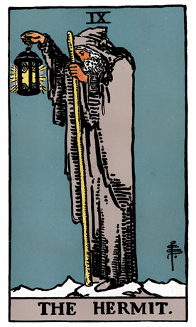

Our journey through the Major Arcana of the Rider-Waite Tarot Deck brings us to The Hermit, a symbol of reflection, solitude, and the search for inner guidance. In this card, an old man stands atop a mountain, holding a lantern to illuminate his path and the paths of others seeking wisdom.
The Hermit's staff represents his authority and spiritual leadership, while the hourglass in his other hand symbolizes the passage of time and the importance of patience in seeking deeper truths. The snow-capped mountain signifies the challenges and isolation of the spiritual journey, and the gray cloak represents the wisdom that comes with age and experience.
The lantern The Hermit carries holds a six-pointed star inside, representing the guidance and wisdom that comes from connecting with the divine. The snow at the hermit's feet symbolizes the purity and clarity that solitude can bring to the mind.
In a tarot reading, The Hermit often emerges as a call to solitude, introspection, and seeking inner wisdom. It suggests a time for self-reflection, meditation, and withdrawing from the external noise to find answers within.
The Hermit encourages individuals to embrace the solitude and silence as a means of connecting with their inner selves. The lantern he holds represents the inner light of awareness, suggesting that the answers sought are already within, waiting to be discovered through contemplation and inner exploration.
The staff The Hermit carries indicates his role as a guide and teacher, urging others to embark on their own journeys of self-discovery. The card emphasizes the importance of sharing wisdom gained through experience and providing guidance to those who seek it.
From a psychological perspective, The Hermit represents the process of individuation—the journey towards self-realization and a deeper understanding of one's true nature. It signifies the need for introspection and the integration of the inner self into the conscious awareness.
In a reversed position, The Hermit may suggest a reluctance to embrace solitude or a fear of facing one's inner truths. It could indicate a need to overcome the resistance to introspection and seek the guidance that comes from within. In such cases, The Hermit serves as a gentle reminder to trust the inner light and the wisdom that emerges from solitude.
Archetypally, The Hermit aligns with the archetype of the wise elder or sage—a figure who possesses profound spiritual insight and serves as a guide to those on the path of self-discovery. The Hermit embodies the wisdom that comes from a life of introspection and seeking higher truths.
Societally, The Hermit encourages communities to value and honor the wisdom of the elderly, recognizing the importance of solitude and introspection in the development of spiritual insight. It emphasizes the role of mentors and guides in supporting the collective journey toward greater understanding.
In conclusion, The Hermit in the Rider-Waite Tarot Deck beckons us to embrace moments of solitude and introspection on our spiritual journey. It encourages individuals to seek inner guidance, trust the wisdom that arises from within, and share the light of understanding with others on their own paths of self-discovery.
```